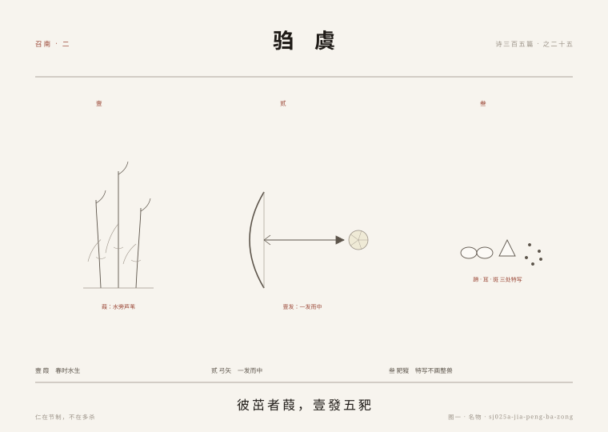
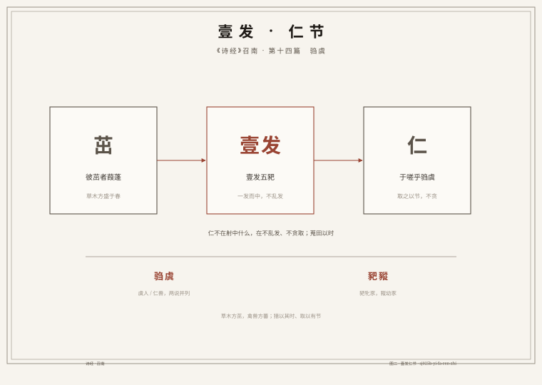

第二十五篇 驺虞
召南 · 之二 SJ025
朗读 · 普通话
依经文正文朗读，句读从文；不配乐、不改速、不加拖腔。全库同一音色（豆包 TTS），非播音员录制。
一 解题
诗三判：
- 谁在说：一个看春蒐的人。他不说猎手之勇，只叹草木之盛、一发之节制，末了一声「于嗟乎驺虞」。
- 说什么事：芦苇茁长，蓬草茁长；一次发矢，射中五头牝豕、五头小豕。叹那掌囿之人（或仁兽）何其仁。
- 为何编在此：这是召南的末篇。召南从《鹊巢》之「备」起，到《驺虞》之「仁」收——家事既成，及于田猎；田猎亦有节制，不贪不伤。卷末回望：备、奉、守、不争之后，落到一个「仁」字。
《毛序》：「《驺虞》，《鹊巢》之应也。《鹊巢》之化行，人伦既正，朝廷既治，天下纯被文王之化，则庶类蕃殖，蒐田以时，仁如驺虞，则王道成也。」——把驺虞读作仁兽，又牵合《鹊巢》之应。
朱子《诗集传》：「驺虞，兽名，白虎黑文，不食生物，有至信之德则应之。」——朱子仍以仁兽为说；而旧另有一读，以驺虞为掌鸟兽之官（虞人）。
本库的看法：骨在春蒐之礼，仁在节制。
「壹发五豝」，一发而中，写的不是多杀，是不乱发；草木方茁，禽兽方蕃，猎以其时、取以有节。驺虞两说并列：掌囿之官，与不食生物之仁兽，义皆归于「仁」。
于嗟一声，叹的正是这份节制。
二 经文
第一章
彼茁者葭，壹发五豝。于嗟乎驺虞！
第二章
彼茁者蓬，壹发五豵。于嗟乎驺虞！
分章：毛传、朱子皆二章，章三句。二章只换三字：葭／蓬，豝／豵；末句「于嗟乎驺虞」两章不动——叹到底。全篇二十三字，是《国风》中最短的一篇之一。
三 韵读
一章鱼部宽舒，与葭芦之长相应；二章东部低沉，收在蓬草与小豕上。两章末句同叹「驺虞」，是全篇的落脚声——赞叹不换腔。
四 字义与名物
- 茁（zhuó）——草初生壮盛之貌。
- 葭（jiā）——芦苇。蓬（péng）——蓬草，蒿类。
- 壹发——一次发矢。壹，一；发，射。不是「一发不可收」，是一发而中。
- 豝（bā）——牝豕，母猪。豵（zōng）——小猪，一岁之豕。
- 于嗟（wū
jiē）——叹词。乎——语助。
- 驺虞（zōu
yú）——两说：一为掌苑囿鸟兽之官（虞人）；一为仁兽，白虎黑文，不食生物。
五 今译
第一章
那芦苇茁长起来，一次发矢射中五头母猪。唉，好一位仁哉的驺虞！
第二章
那蓬草茁长起来，一次发矢射中五头小豕。唉，好一位仁哉的驺虞！
译注：「壹发」译「一次发矢」，强调射有节制；「豝」「豵」分别译母猪、小豕，不混作「野猪」。「驺虞」译文存「仁」意，官与兽两说皆不坐实。
六 章旨
一章：葭中得豝。草木盛于春，猎及牝豕；一发而五中，见其熟。
二章：蓬中得豵。由牝及小，所取甚细；草木又易为蓬。
两章对看：草由葭而蓬，豕由豝而豵；表面换物，内里是同一场春蒐。末句两叹相同——仁不在射中什么，在不乱发、不贪取。
七 诗教
- 赋：直陈田猎之时与所得，葭蓬豝豵皆实写，是赋。
- 观：可观一「节」。田猎而有仁，取之以时、发之以节；此篇所赞，不是勇，是节制。
- 群：蒐田是聚众之礼；草木禽兽蕃殖于群，仁及于物而后及于人。
- 怨：无怨。全篇唯叹美；唯可注意者，不取孕、不贪多，是怨刺之未形。
八 分寸与边界
- 不可把「壹发五豝」读作滥杀、夸耀多获。一发而中，写的是节制与熟习，不是铺张猎物之多。
- 不可把驺虞径定作仁兽。掌囿之官一说并存；无论官与兽，所赞皆仁，不必先立一瑞兽架子。
- 不可把豝、豵混为一类。豝是牝豕，豵是幼豕；大小、牝牡有别。
- 不可把葭、蓬当作同一种草。葭是芦苇（水旁），蓬是蒿类（旱地），二章易地。
- 不可把此篇读成狩猎战歌。全篇无勇力之夸，叹的是仁；读作尚武，便把卷末之意读反了。
九 存疑
- 驺虞为何：仁兽说（毛、朱）与虞人说并列。本库两存，取其「仁」义相通处。
- 「五豝」「五豵」之数：一说实数五头，一说形容其众。本库取「取盛不核数」。
- 蒐之时令：毛传以为春蒐；一说是冬猎。草木方茁，本库从春时。
- 与《鹊巢》之应：毛序以《驺虞》为《鹊巢》之应；此为汉人的政教配读，本库存录而不循。
- 篇次为何为召南终卷：旧说以仁道成而收召南；本库只就卷内看其由家及物、由成及仁。
十 跨典
- 《召南·鹊巢》——同卷首尾。开篇写「备」，末篇写「仁」；毛序所谓应，即此首尾相应。
- 《周南·兔罝》「肃肃兔罝」——同是田猎之诗，彼赞武夫之勇，此叹蒐田之仁；两卷猎诗可对看。
- 《周易·屯》「即鹿无虞」——虞人掌山泽鸟兽，可证驺虞为官之一读。
- 《礼记·王制》「天子诸侯无事，则岁三田」——田猎有时、有制，此篇「壹发」之节即其遗意。
- 《周礼·兽人》「掌罟田兽」——古有掌猎之官，与虞人一职相表里。
十一 双卡与图
双卡五对：
| 葭（芦苇） |
蓬（蒿草） |
| 豝（牝豕） |
豵（幼豕） |
| 壹发（节制） |
五豝（所得） |
| 官（虞人） |
兽（仁兽） |
| 茁（草盛） |
仁（不贪） |

图一 · 葭蓬·豝豵 名物图

图二 · 壹发·仁节 义理图
读图三处：
- 草木画三处方可：名物图不求整兽写实，葭、蓬两处草木之外，豕只作蹄、耳、斑三处特写即可。
- 葭在水旁，蓬在旱地：一章近水生芦，二章旱地生蓬；二格地形要分出水与陆。
- 矢只一发：图上画一支矢、一处中的；不可画成箭雨——「壹发」是戒条，也是此篇之骨。